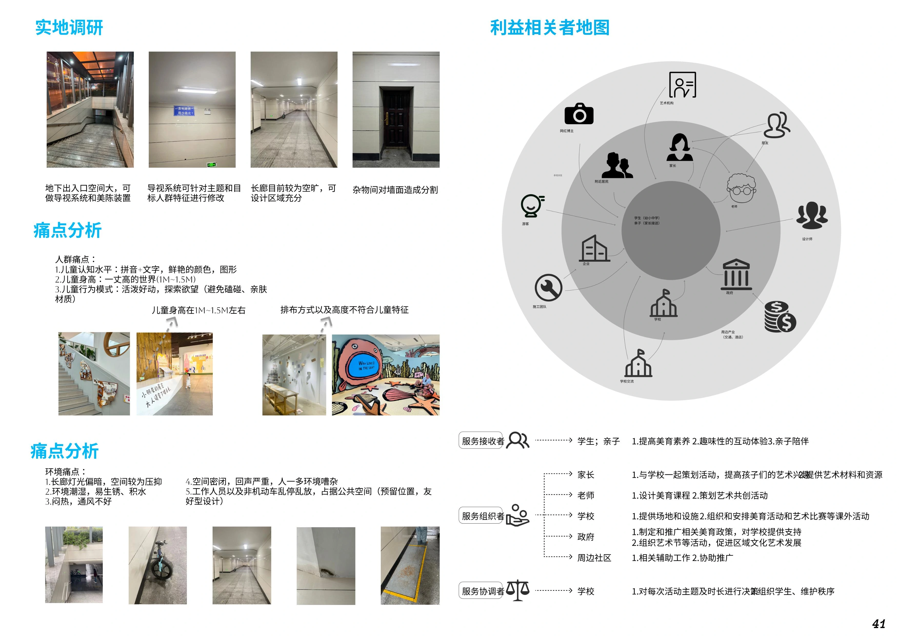
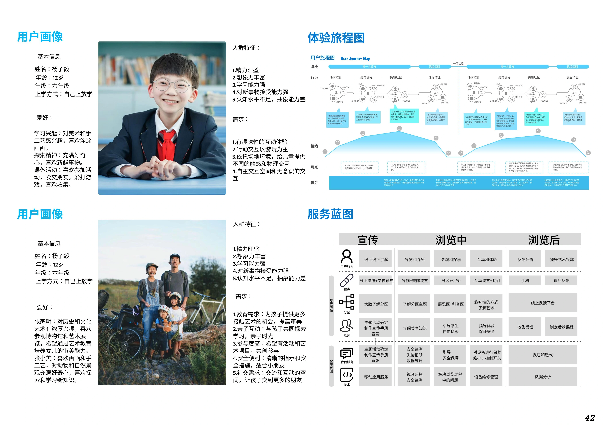
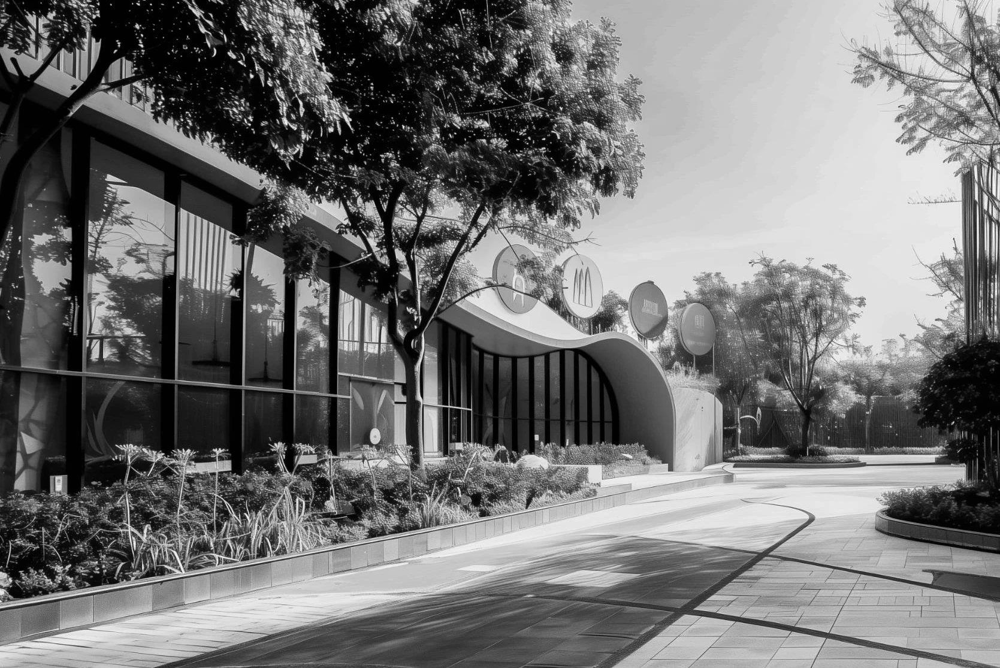
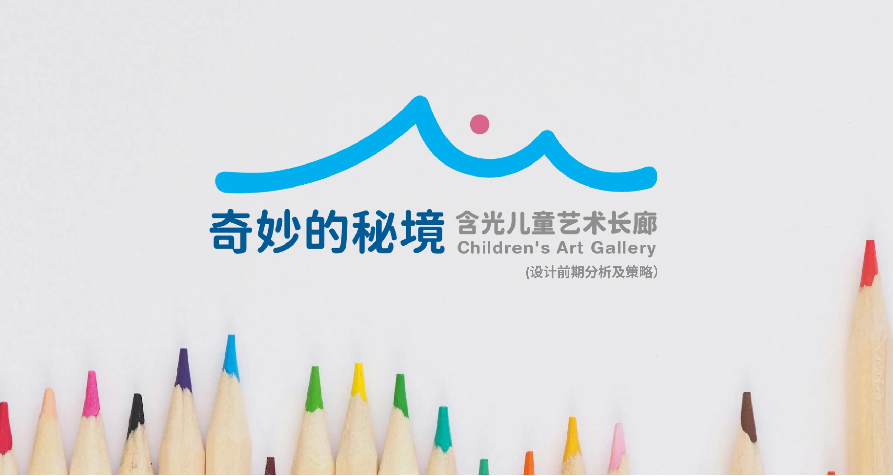
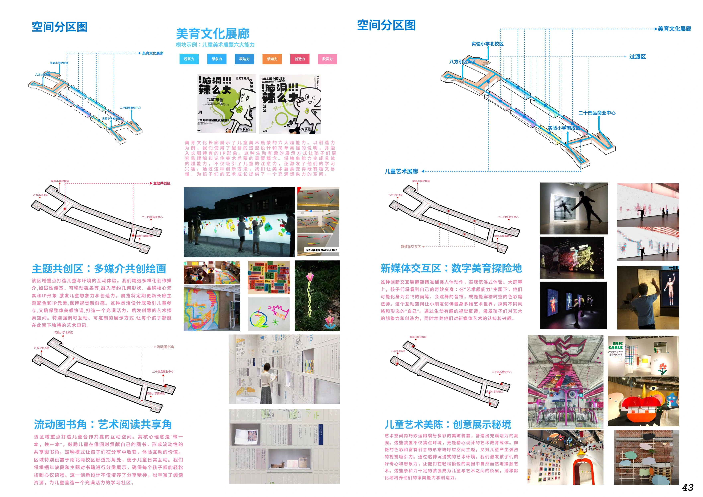
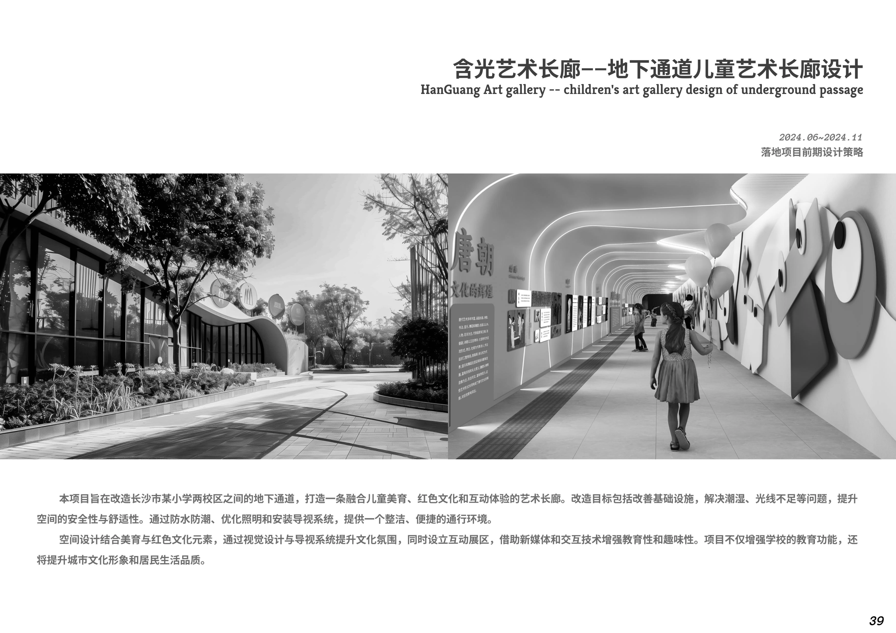
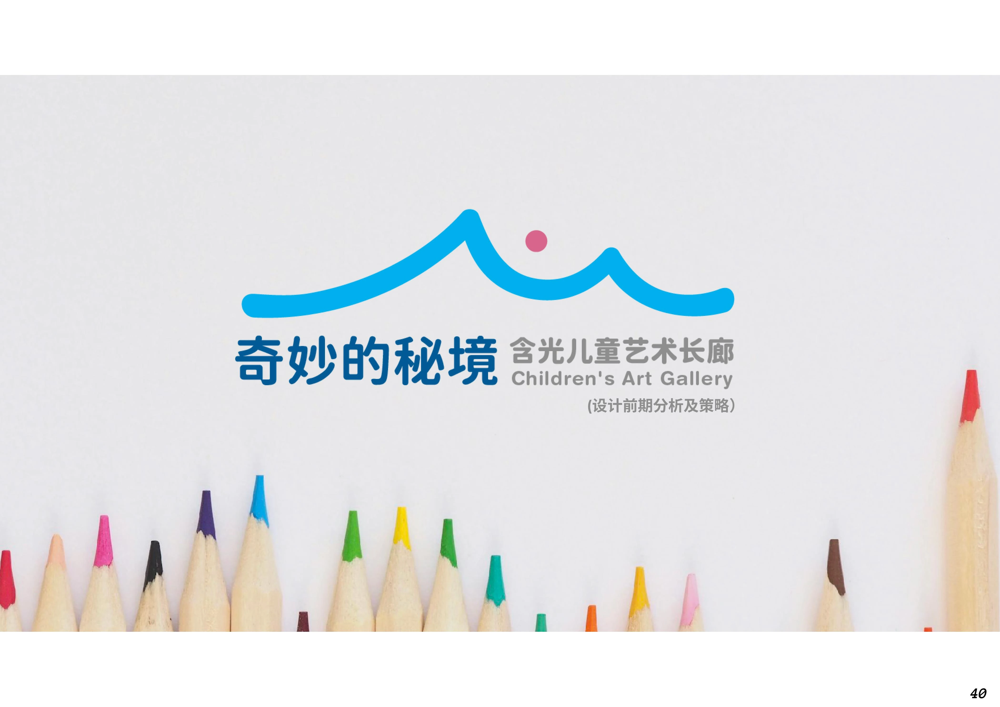
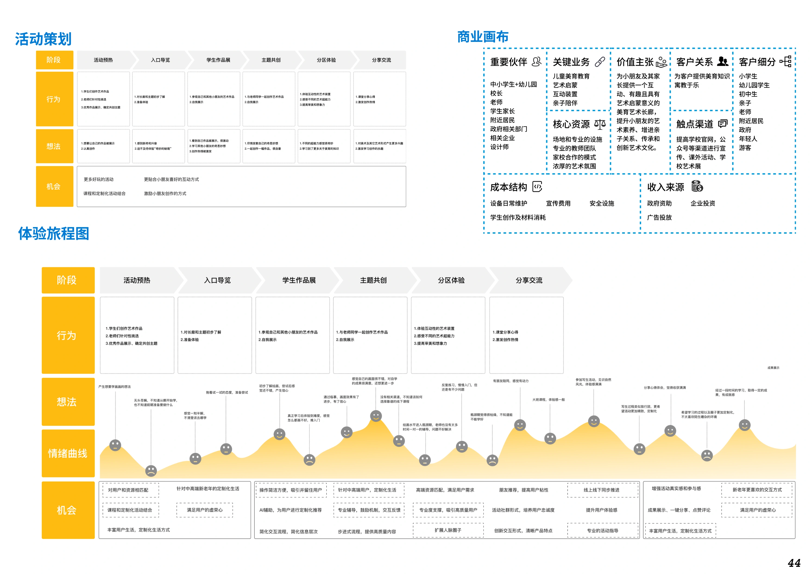

参与与共创
让作品展示与可参与的艺术活动形成联系。
地下通道儿童艺术长廊设计
将连接校园的地下通道转化为日常美育空间。以实地调研和儿童需求为基础，结合空间改造、艺术展示与服务设计，让通行过程成为观察、共创和交流的机会。

实地调研记录照明不足、潮湿、通风与声环境等问题，并梳理学生、家长、学校和社区的关系。儿童的识读方式、身高与探索行为，成为展示、导视和互动设计的依据。


沿通道组织美育文化展廊、主题共创区、流动图书角、新媒体交互区与儿童艺术美陈。不同内容配合校园间的日常流线，提供观看、参与和交流的机会。



本页中的案例照片为原方案参考意向，与空间分区策略一并保留。


以活动策划、体验旅程和服务蓝图连接建成空间与后续使用。围绕儿童、家长与学校的参与方式，考虑活动组织、内容更新和服务协作。

让作品展示与可参与的艺术活动形成联系。
梳理进入、游览、停留与离开的体验变化。
协调学校、家长与其他参与方的组织角色。
资料来源：《作品集2.27》第5章。图注采用 PDF 实际页序；设计说明依据原图面整理。